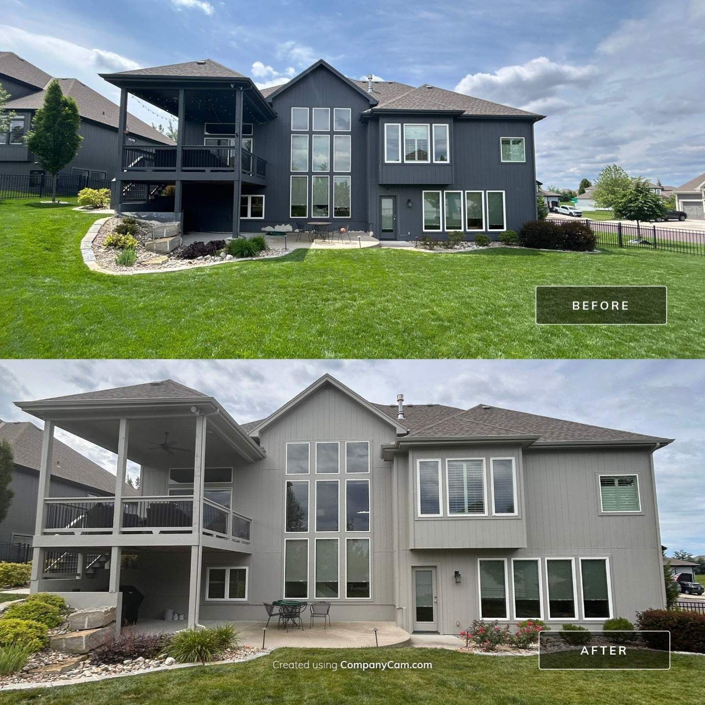

One of the metro's biggest suburbs — and some of its most dramatic before-and-afters. Your house could be next.
Get Your Free EstimateLee's Summit grew fast through the 90s and 2000s, and those neighborhoods are hitting repaint age now — often all at once. Big two-stories with hardboard or stucco, open lots with full sun exposure, and builder-grade paint that's simply done after 15 years.
Full-sun homes fade fast and fail at the caulk lines first. Our process is built for exactly that: scrape and sand what's failing, re-caulk every seam with SherMAX, prime, and finish with Sherwin-Williams coatings rated for Missouri sun and freeze-thaw winters. The color flips we've done on homes like these are some of our most dramatic transformations.

Yes — Lee's Summit and the eastern Missouri-side suburbs including Blue Springs and Raytown are part of our service area.
Yes — dramatic color flips are some of our favorite projects. Light-over-dark takes proper priming and coverage planning, which we build into the quote up front.
On full-sun lots, yes — UV breaks down builder-grade paint fastest on south and west faces. Higher-grade Sherwin-Williams products hold color dramatically longer; we'll show you the options at your estimate.
Size, stories, and surface condition drive it. Estimates are free with an owner-led walkthrough, and the written number is the number you pay.
Owner-led walkthrough, detailed written quote, a number that holds.
Request a Free EstimateOr call/text 913-210-1041